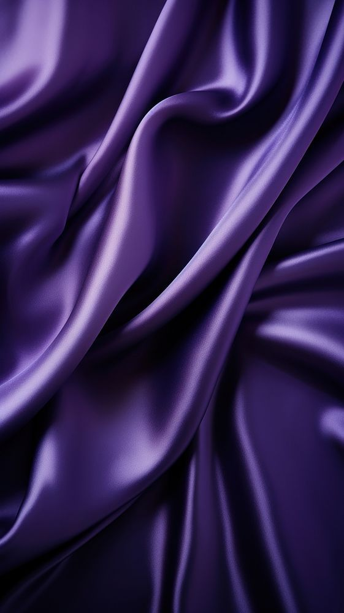
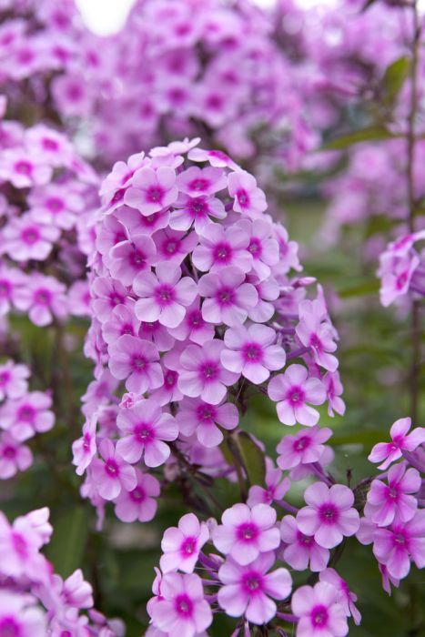
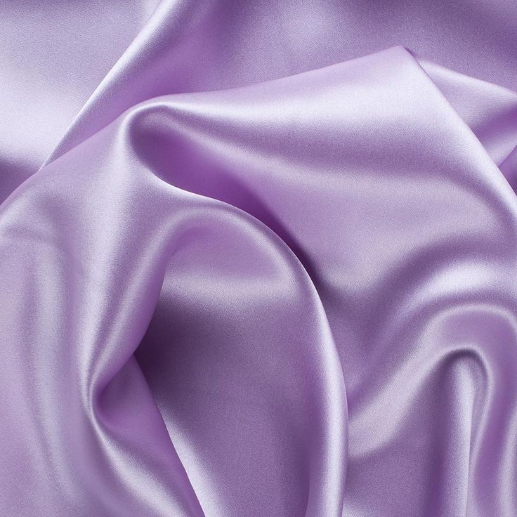

Growing up, I never really figured out a definite response to the question, "what is your favorite color?"
As I grew older, and lied while repsonding "blue," or "black," a day dawned on me, where I realized my favorite color is all of them!
By themselves, they are what they are. But when introduced to other colors, they become something different, if only another shade.
But my favorite color is not one reflecting all colors, or absorbing them as "white" or "black," but a combination something like "gray."
Though I would say "gray" is also one of my favorite color, I feel like "purple" is it's colored equivalent, which is indeed, my favorite color.
| Shade of Purple | Example |
|---|---|
| Royal Purple |  |
| Psychadelic Purple (phlox) |  |
| Lavender Purple |  | © Nicholas Lauer ITDEV-160 Fall 2024 Contact |